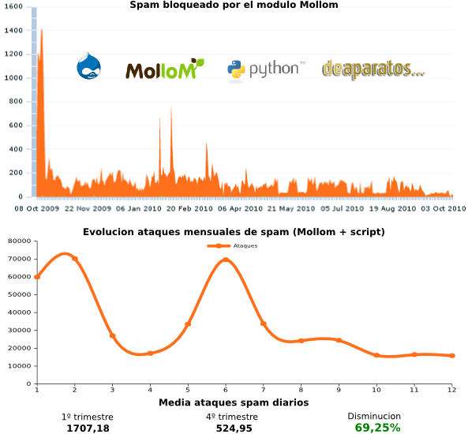
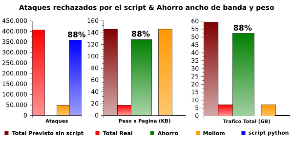
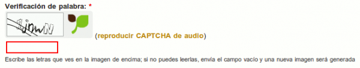
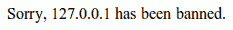

Articulo publicado originalmente en el antiguo sitio deaparatos.com

En esta gráfica se puede observar la disminución a lo largo del tiempo de los
ataques de spam a este sitio, deaparatos.com, que funciona sobre
Drupal. Esto se ha conseguido gracias a una doble estrategia:
- emplear uno de los mejores módulos antispam existentes para Drupal, Mollom
- emplear un script en python de elaboración propia, ban_drupal_spammers.py
Esta doble estrategia no solo ha conseguido una más que notable reducción
de la incidencia del molesto spam en este sitio, de casi un 70%, si no
que además ha conseguido una más que notable reducción del ancho de banda
consumido por los spammers, como se puede observar en la siguiente tabla:
Estadísticas de Trafico generado por ataques de spam en deaparatos.com
|
|
Días |
Ataques Spam |
Trafico (GB) |
Media pagina (KB) |
Trafico mes (MB) |
| Mollom |
|
359 |
48741 |
7,116 |
146,000 |
602,927 |
| Mollom + script |
|
359 |
358666 |
0,016 |
0,046 |
1,389 |
| Total |
|
|
407407 |
7,133 |
17,507 |
604,316 |
Si solo hubiera empleado el modulo Mollom, sin emplear mi script
|
|
Trafico (GB) |
Ahorro (GB) |
| Trafico spam total |
(358666 * (146,000 – 0,046) KB) + 7,133 GB = |
59,481 |
52,349 |
| Trafico spam mensual |
((59,465 GB * 365) / 359) / 12) MB = |
5,040 |
4,435 |
Como podemos ver en las cifras mostradas de esta tabla, se ha conseguido en
un periodo de aproximadamente un año reducir el ancho de banda consumido por
los ataques de spam en más de 52 Gigabytes!, una autentica barbaridad de
tráfico que de otro modo se hubiera malgastado. Estamos hablando de un ahorro
de consumo de tráfico de casi 4,5 Gigabytes al mes!!! Un ahorro de ancho
de banda mensual que en un hosting compartido puede tranquilamente suponer el
cambio de un plan de hosting a otro, simplemente basta con que los molestos
spammers pongan tu sitio web en su punto de mira. Y ha de tenerse en cuenta
una cosa, que este trafico mensual hubiera sido muy superior si esta doble
estrategia no hubiera conseguido reducir el numero de spammers en un 69.25%,
no quiero ni pensar en las cifras que hubieran resultado...
Para que nos hagamos una idea del ahorro de ancho de banda que ha supuesto el
emplear mi script python, en el siguiente gráfico podemos ver la diferencia
entre emplear solo Mollom y emplear Mollom combinado con
ban_drupal_spammers.py

El gráfico es meridianamente claro, como podemos ver, por cada 1% de ataques
que son rechazados por ban_drupal_spammers.py y no por Mollom, ahorramos un
1% de ancho de banda, tanto en el peso por página como en el tráfico total.
Como podemos ver, hemos ahorrado un total de un 88% de ancho de banda del
trafico que sería generado por los ataques de spam en deaparatos.com
Después de comprobar la eficacia de esta doble estrategia durante más de un año
(las estadísticas se interrumpen antes por el cambio de hosting) voy a
explicaros el porqué y el como he llegado a ella, a continuación. También se
puede ver el script que ha marcado la diferencia de tráfico.
El spam en internet
El spam es una de las lacras más tediosas y difíciles de combatir en
Internet, por no mencionar las tareas delictivas que se apoyan en él. Después
de 15 años combatiendo el spam en el correo electrónico, el problema aún está
lejos de solucionarse, si bien es cierto que con una adecuada configuración de
las herramientas de correo, se ha convertido en una molestia trivial para el
usuario final. Pero para los servidores de correo y el tráfico de internet
sigue siendo un problema de dimensiones colosales, la lucha contra el mismo se
ha convertido una tarea titánica en la que se invierten ingentes sumas de dinero
todos los años. De hecho gran parte del tráfico de toda internet se
debe al spam (hay quien arroja cifras del 80%, e incluso superiores al 90%), lo
que ha acarreado un costosísimo sobredimensionamiento en el equipamiento de
proveedores de internet y servidores.
Como antes comentaba, lejos de una solución definitiva (en gran medida depende
de un tipo muy común de usuario final con escasa cultura informática), esta
lacra se expandió hace unos años a hilos en foros, a comentarios en blogs,
redes sociales, irc,... es decir, se ha expandido por toda la red. La explosión
de la llamada web 2.0 no ha incrementado si no este problema, multiplicándolo.
Y he aquí como un problema que afectaba a los usuarios de email y a los
proveedores de internet, se ha convertido también en un gran problema para los
webmasters. Todo aquel que gestione un sitio web, ha tenido que enfrentarse
antes o después con este maldito problema. Un problema que no solo se traduce en
cientos o miles de detestables mensajes de spam, que se han de combatir de uno
u de otro modo (algunos o bien se rinden o bien tienen abandonados sus sitios y
se convierten en auténticos cementerios de spam), si no que además se traduce en
un serio problema para el trafico de una web. El número de solicitudes que
producen los ataques de spam puede llegar a ser tan elevado, que congestione
totalmente ya no solo la página, si no el servidor cuando se trate de un hosting
compartido, convirtiéndose casi de facto en un ataque DoS en toda regla.
Aún sin llegar a este indeseable extremo, el incremento del tráfico en el sitio
debido al spam puede llegar a suponer un porcentaje muy importante del ancho de
banda contratado (incluso más del 50% con contramedidas ineficientes), con los
consiguientes perjuicios económicos que suponen al webmaster. Los spammers
siempre han ido por delante de las contra-medidas, y la actual situación, con
extensas botnets a su disposición y con el cloud computing (se ha
detectado el año pasado la primera
botnet que empleaba los servicios de Amazon EC2) , nos ha llevado a un
combate continuo en las que tienen todas las de ganar a medio plazo... y observo
esto con cierta tristeza, por que entiendo que la solución final pasa
necesariamente por la educación del usuario final, haciéndole inmune a los -en
gran medida patéticos, infantiles, ridículos y chapuceros- reclamos del spam. Y
esto último desgraciadamente dista mucho de acercarse a una situación ideal.
También cabe mencionar que
el spam también perjudica al posicionamiento de una web, a su prestigio, a
su funcionalidad, a su aspecto, etc.
deaparatos.com y el spam
Y deaparatos no está exento de esta amenaza, de hecho se había convertido en
un serio problema en el 2009. Este sitio está gestionado con Drupal, y
después de probar con distintos módulos y métodos, unos más frustrantes que
otros, ninguno solucionaba por completo el problema, ni me satisfacía como
solución. Al final, combinando el módulo más idóneo para combatir esta plaga
(idóneo por resultados y por comportamiento) con un script de factura propia en
Python, he logrado, no acabar con todo el spam (se me antoja tarea cuasi
imposible), pero si minimizar sus efectos a un nivel muchísimo más que aceptable.
Y minimizar los efectos tanto a la hora de impedir/eliminar los comentarios spam,
como de reducir el abultado tráfico que estos ataques consumían. ¿Por qué un
script en Python? bueno buscaba algo rápido, un prototipo para probar la
solución que tenia en la cabeza y porque estoy "enamorado" de este lenguaje de
programación. Quizás si veo que merece la pena, me plantee migrarlo a PHP y
convertirlo en un módulo de Drupal, o bien modifique el modulo oficial que
estoy empleando para mitigar el spam y le incorpore el código que empleo ahora.
Bueno, veamos como he llevado a cabo esta solución y porqué.
Generalmente los métodos para combatir el spam se centran en:
- medidas activas: análisis heurísticos, filtros estadísticos (bayesianos), diferenciación de bots/humanos (captchas), filtros por host/email, mediante cookies, timestamps, filtros por user-agent, ...
- medidas pasivas: ofuscar direcciones de correo, moderación de comentarios, enlaces nofollow, permisos de publicación, políticas de contraseñas, campos ocultos mediante css/javascript, cerrar los comentarios de un post pasado un tiempo, ...
De entrada tenía, y tengo, algo muy claro, no voy a emplear ninguno de estos
tres métodos habituales: captchas, moderación de comentarios y requerir
registro para enviar comentarios. Y es una decisión inamovible, no pienso
claudicar de ningún modo en este sentido. Son métodos que o bien me harían
perder un tiempo del que ni dispongo, ni estoy dispuesto a perder, o bien
suponen un incordio que me personalmente me incomodan mucho cuando me los
encuentro en otros sitios y por los que no quiero hacer pasar a mis lectores.
Esto evidentemente deja fuera algunas de las medidas más efectivas para combatir
el spam, pero son medidas en las que el usuario o el webmaster siempre pierden,
de un modo u otro, y no estoy dispuesto a permitir que los spammers condicionen
en ningún modo el compartimiento de este sitio. Aunque suene contradictorio con
lo que acabo de decir, el método que voy a comentar aquí, y que empleo
actualmente, emplea en alguna medida el uso de captchas, aunque de modo tan
limitado, que afecta a menos del 0,5% de los comentarios enviados. Digamos que
lo acepto como una razonable excepción a la regla. Si empleo en cierta medida
algunos de los otros métodos.
You need to upgrade your Flash Player
En este mapa podemos ver el país de origen de los ataques de spam contra
deaparatos.com
Drupal y el spam
Con que armas contamos en Drupal para combatir el spam? Por un lado tenemos
el clásico modulo Spam, que emplee en este mismo sitio durante más de dos
años, y que su mayor ventaja es contar con un filtro Bayesiano. Este
módulo es usado actualmente en unos 4.893 sitios 1 con Drupal. Durante
mucho tiempo funcionó perfectamente, de vez en cuando se colaba algún comentario
spam, pero era cuestión de reportarselo al modulo y el iba aprendiendo, así como
podíamos crear nuestros propios filtros personalizados. El problema comenzó
cuando los que se colaban ya eran unos 20 spam diarios y aumentando, y entonces
ya no era viable, ni cómodo, perder tanto tiempo para que el filtro bayesiano
aprendiera a combatir unos ataques que eran cada vez más sofisticados. Así que
tocaba mirar otra alternativa de entre alguna de las disponibles:
- Captcha, uno de los más usados en Drupal
(80.286 sitios), y uno de los métodos más empleados en la red.
Es la clásica opción donde mediante una pregunta al usuario se intenta
diferenciar entre humano y maquina. Los captchas pueden ser de varios tipos,
desde cálculos matemáticos sencillos hasta gráficos donde se encuentran unos
caracteres ofuscados y que el usuario debe introducir. Hay varios módulos que
lo complementan, aportando distintos tipos de captchas, donde reCaptcha
es uno de los más empleados (16.684).
- Akismet, todo un clásico, basado en el servicio homónimo,
Akismet, que creara en su día Wordpress y que hoy es sostenido por
Automattic, empresa donde trabajan la mayoría de los desarrolladores
oficiales de Wordpress. Es uno de los métodos más difundidos en la red,
en parte por venir de la mano de la empresa más emblemática de los blogs.
Esta implementación del servicio akismet es ya un tanto antigua (ya no
tiene soporte) y hay un modulo más reciente que lo supera y aporta más
funcionalidades, Antispam, también en esta lista. Es usado actualmente por
solo 947 sitios.
- Spamicide, se basa en la premisa de que la mayoría de los ataques spam
se producen con bots que acceden a la página con navegadores en modo texto
(scripts en realidad), por lo tanto ni hacen uso de css, ni de
javascript. Aprovechando esta circunstancia, crean un campo de formulario
que es ocultado con css, con lo cual el usuario normal no lo ve, pero si el
bot, que si lo rellena con texto, queda descartado. Pero los spammers aprenden
muy rapido, así que la medida no es muy efectiva. Además últimamente empiezan
a aparecer personas dedicadas a introducir comentarios spam a mano (de ahí
vienen muchos de esos comentarios hoygan absurdos que no parecen tener
mucho sentido) y que cobraran una miseria en países subdesarrollados, en parte
para saltarse los captcha. Por eso su efectividad es muy dudosa. Aunque si
puede ser usado combinado con otros módulos spam, para reforzar su eficacia.
Es muy poco usado, apenas 377 sitios lo emplean.
- Antispam, uno de los mejores módulos antispam para drupal. Con el se
puede usar algunos de los mejores servicios antispam externos que hay en la
red: Akismet, Typepad y Defensio. Con él podemos abrir una
cuenta en uno de estos servicios y configurar el módulo para emplearlo. Su
eficacia es muy elevada, ya que son algunas de los mejores armas disponibles
contra el spam. El funcionamiento básico es consultar la base de datos de
alguno de estos servicios, muy completas, para comprobar si el comentario u
el posteador son probable spam, y bloquearlo en caso de que la probabilidad
sea muy elevada. En caso de duda, aparecerá un captcha para descartar bots.
Tiene unas gráficas estadísticas muy útiles para comprobar la evolución del
problema en nuestro sitio. No es demasiado empleado, estando instalado en
unos 1.718 sitios.
- Bad Behavior, otro viejo conocido de las medidas antispam. Este se
basa en parte en un análisis heurístico de las peticiones HTTP del bot y
comparándolo con las bases de datos que poseen de spambots conocidos. Este
hace uso también de las base de datos del Proyecto Honey Pot, para
reforzar la identificación de spammers. Es bastante eficiente, pero el
problema está en que van por detrás siempre de los spammers y a veces se les
cuela algún que otro comentario spam. Básicamente porque se basa en que uno
reporte los spammers que aún no están en sus bases de datos, y hasta que
alguien reporta a un spammer, este puede habernos colado unos cuantos
mensajes. Es empleado en unos 918 sitios drupal.
- http:BL, ese se basa enteramente en el Proyecto Honey Pot. Usa
sus bases de datos (DNS blacklist) para prevenir comentarios spam y
recolectores de direcciones email. Es eficiente en la misma medida que el
anterior, depende de su base de datos, que no es tan completa como las de los
servicios que soporta el modulo Antispam. Una de las virtudes de este
modulo es que bloquea las solicitudes de pagina de aquellas Ips que están en
su lista negra, con el consiguiente beneficio que esto reporta para el trafico
de nuestro sitio. Permite también el uso de whitelists y greylists.
Podría ser uno de los mejores módulos antispam para Drupal si no se colaran
más comentarios spam de lo deseable. Actualmente solo443 sitios emplean
este modulo.
- PHPIDS, esta emplea una aproximación al problema diferente. Emplea un
sistema de detección de intrusos desarrollado y mantenido por PHPIDS.
Este no solo detecta ataques de spam, si no que también otro tipo de ataques
maliciosos al sitio, como XSS (cross site scripting),
inyecciones sql, DoS, etc. El problema es que arroja demasiados falsos
positivos y hemos de ir afinando la detección poco a poco, lo cual puede
llegar a ser bastante tedioso. Se puede usar conjuntamente con otros módulos
antispam, pero normalmente este bloqueará el ataque antes de que el otro se
percate. Lo malo, claro, es que hasta que no esté completamente afinado, a
los usuarios les puede dar mucho la lata ante comentarios completamente inocuos.
También puede llegar a generar unos logs muy extensos que pueden incrementar
bastante nuestra base de datos. Puede ser muy útil para aquellos sitios en
los que los ataques van más allá del simple spam. Tampoco es muy empleado,
solo 361 sitios lo tienen implantado.
- Mollom, uno de los últimos en llegar, pero lo ha hecho arrasando, en
dos años ha conseguido que ya sea empleado en 23.983 sitios drupal. Esto
se debe en parte a que uno de los co-autores es el creador de Drupal,
Dries Buytaert. Mollom es un servicio web en la misma linea que
Askimet o Defensio, con una base de datos de usuarios en la que aparte
de spammers, se registran reputaciones de usuario en función de parámetros
como comentarios ofensivos, comentarios de "baja-calidad" (hoygans),
comentarios off-topic, etc según como nosotros lo reportemos a Mollom. Es
decir que nos ayuda también a mejorar la calidad de nuestro sitio filtrando
también a usuarios con baja reputación en función de los parametros que
nosotros marquemos. Esto desde luego es un punto a favor del servicio, que
nos permite matar dos pajaros de un tiro. El servicio analiza el texto del
mensaje, y si es spam, lo bloquea y en caso de dudas mostrara un captcha como
el de la imagen (menos del 2% de las ocasiones). Además todo el código es
opensource, tanto el del modulo como el de la API de Mollom y hay
disponibles módulos para otros gestores de contenidos como Wordpress,
Joomla o Radiant y librerías para múltiples lenguajes (Java, PHP,
Ruby, Python, Perl, .Net, ...).
Después de analizar las posibilidades y probar unos cuantos módulos
(Antispam, Bad Behavior, http:BL, PHPIDS y Mollom) llegué a
valorar que las dos mejores soluciones en mi caso eran Antispam Y
Mollom. Aunque PHPIDS y http:BL tenían algunas características
únicas que echaba de menos en ellos. Después de probar durante unas semanas
tanto Antispam como Mollom, observe que el indice de fallos de
Mollom era mucho menor y además era más transparente al usuario, mostrando
el captcha en menos ocasiones. Si, Captcha es la opción más socorrida por la
mayoría de los usuarios de Drupal, en cuanto que es la que menos molesta al
webmaster, claro, pero le traspasa la molestia al usuario. Yo odio directamente
los captcha, no los soporto, y he pasado de utilizar alguna web por ellos.
Mollom tiene la ventaja de reducir esta molestia a la minima expresión, por
lo que el 98% de los usuarios de la web ni siquiera se darán cuenta de que en
ella funciona un sistema antispam, que es lo que buscaba desde el principio, un
servicio efectivo y transparente.
Mollom era pues, la opción elegida y la que está funcionando en este sitio
desde entonces.

Ejemplo de captcha generado por Mollom
La solución definitiva, Mollom + ban_drupal_spammers.py
Aunque Mollom funciona de manera muy efectiva, bloqueando aprox. el 99,98%
(en deaparatos.com) de los mensajes spam, esto no impide que los atacantes
sigan intentando una y otra vez colar su spam en el sitio. Esto nos lleva a que
las páginas se cargan una y otra vez, consumiendo ancho de banda, ya que
Mollom actúa a posteriori, cuando se envía el comentario, no antes de cargar
la página, lo que es el funcionamiento normal de estos sistemas antispam. Y
además los spammers tienen cierta inclinación a intentar introducir el spam en
las paginas más populares, las que suelen tener más comentarios y por lo tanto
de mayor peso por lo general. Basta con decir que el ancho de banda medio
generado por cada uno de estos ataques en este sitio ha sido de 146Kb.
Y es en este aspecto donde echaba de menos una de las características de
http:BL, bloquear el acceso al sitio a los que están en su lista negra.
Empecé entonces a darle vueltas a la manera de implementar esta característica
en mi sitio, pero pronto me di cuenta de dos cosas:
- No quería hacer una consulta a projecthoneypot.org cada vez que alguien
accediera al sitio, por evidentes mermas en el rendimiento del sitio.
- No quería tampoco tener una lista negra local que se alimentara
periódicamente de projecthoneypot.org, porque no quería tener que comprobar
miles de ips que probablemente nunca accederían a mi sitio.
La solución entonces pasaba por bloquear solo a los que ya hubieran ejecutado
un ataque de spam contra el sitio y que hubieran sido bloqueados al menos una
vez por Mollom, de modo que en los sucesivos ataques fueran rechazados antes
siquiera de cargar la página.
Hay una forma de hacer esto de forma manual en Drupal, simplemente hay que
añadir las ips de los spammers a través de las reglas de acceso en el menú de
Administración. Claro que el método es evidentemente tedioso y aparatoso,
comprobar las ips atacantes e ir añadiéndolas una por una a través del
formulario. Tenía que hacerse de una manera automatizada.
La primera idea y más evidente era modificar el modulo Mollom para lograr
esto, pero no me gusta PHP y procuro evitarlo, además quería un prototipo rápido
para evaluar la eficacia de la solución y su repercusión en el ancho de
banda, así que todo empezó con un sencillo script en python. Pronto me di
cuenta de que Mollom registraba las ips de todos los atacantes que bloqueaba
en el registro de eventos de Drupal (la tabla watchdog del modulo opcional
Database logging), y que alguna de ellas tenía hasta 30 entradas diferentes
en el registro. Y como Drupal incorpora el método que citaba antes para
banear IPs, lo único necesario era añadir estas IPs a la tabla access.

Este es un ejemplo de la pàgina que se encontraria un atacante de spam bloqueado
a través de la tabla access en Drupal
Ahora bien, si añadimos automáticamente estas IPs, llegara un momento en que
tendremos varias miles de ellas, y el rendimiento de la página se vera afectado,
al tener que comprobar todas estas ips cada vez que alguien accede a la página.
Además hay que tener en cuenta que algunas de estas IPs tendrán como origen a un
usuario que teniendo el ordenador o router infectado por un
rootkit/troyano, pertenezca a una Botnet sin saberlo. Es
posible que estos usuarios acaben limpiando de malware su equipo y en un
momento determinado quieran acceder legítimamente al sitio, por lo que no
deberían estar bloqueados de por vida. Esto lo solucioné en el script rotando
las IPs al llegar a umbral determinado, marcado por el número máximo de las IPs
que deseemos almacenar en esta tabla. Al llegar a este número máximo, se borra
un porcentaje de IPs, eligiendo siempre a las más antiguas. En estos momentos,
en función del rendimiento y tiempo que quiero que permanezcan en la tabla,
tengo este valor establecido en unas 2000 IPs. Para controlar la fecha en que
fueron introducidas cada una de las ips en la tabla, modifico la tabla access,
añadiéndole un campo timestamp.
Como se pudo ver al principio del articulo, la efectividad del script es muy
elevada y a día de hoy sigo con este método, con un script que ha evolucionado
varias veces desde entonces y que se adapta perfectamente a mis necesidades.
Los picos que se pueden ver en el primer gráfico del spam bloqueado por el
modulo Mollom, se deben precisamente a los breves periodos de tiempo en los
que por una u otra razón el script no estaba funcionando.
El porqué del fantástico ahorro de ancho de banda se puede explicar con la
anterior imagen, que es un ejemplo de la página que se encontraría un atacante
bloqueado por ban_drupal_spammers.py. Esta página tiene un peso ridículo
de entre 33 y 39 bytes, del orden de unas 4000 veces menos que el peso medio de
146 Kilobytes por página del trafico generado por los spammers.
Este script se puede ejecutar en remoto, para hostings compartidos que no pueden
correr scripts en python pero si permiten acceso remoto a la base de datos en
MySQL, como mi anterior hosting (quede muy satisfecho). Pero
también puede ser ejecutado de manera local, en hosting compartidos (que
soporten python), en VPS y en servidores dedicados. No muchos hostings
compartidos permiten la ejecución de scripts en python, ni siquiera ssh o
acceso remoto a la BDD. Afortunadamente, mi hosting actual, Webfaction,
me permite todas esas posibilidades y no es ningún un problema. De hecho es el
mejor hosting compartido que haya probado nunca y uno de los mejores del mercado,
porque su manera de trabajar es única y es lo más parecido a un VPS, pero con
una facilidad para administrar las tareas más cotidianas apabullante. Eso si,
es distinto a todos los demás y necesita uno adaptarse a su manera de hacer las
cosas, pero luego ya no quieres saber nada de otros hosting compartidos. Si
además quieres trabajar con ruby o python, pocos puede competir con su
flexibilidad, lo que me hizo decidirme por él.
El script, ban_drupal_spammers.py
El script (siempre la versión más actualizada), los ficheros auxiliares y las
instrucciones de como emplearlos, pueden ser encontrados en mi repositorio
code.joedicastro.com/ban-drupal-spammers
donde tambien se puede encontrar el script python que empleo para recoger los
datos que se muestran en el mapa de este árticulo.
El código de ban_drupal_spammers.py es el siguiente:
#!/usr/bin/env python
# -*- coding: utf8 -*-
"""
ban drupal spammers.py: ban spammers in Drupal with Mollom's aid
"""
#===============================================================================
# This Script uses the Mollom reports in Drupal for ban spammers' ips and
# reduce the bandwith usage in the website.
#===============================================================================
#===============================================================================
# Copyright 2010 joe di castro <joe@joedicastro.com>
#
# This program is free software: you can redistribute it and/or modify
# it under the terms of the GNU General Public License as published by
# the Free Software Foundation, either version 3 of the License, or
# (at your option) any later version.
#
# This program is distributed in the hope that it will be useful,
# but WITHOUT ANY WARRANTY; without even the implied warranty of
# MERCHANTABILITY or FITNESS FOR A PARTICULAR PURPOSE. See the
# GNU General Public License for more details.
#
# You should have received a copy of the GNU General Public License
# along with this program. If not, see <http://www.gnu.org/licenses/>.
#
#===============================================================================
__author__ = "joe di castro - joe@joedicastro.com"
__license__ = "GNU General Public License version 3"
__date__ = "15/05/2010"
__version__ = "0.52"
try:
import sys
import os
import time
import base64
import collections
import MySQLdb
import pygeoip
import logger
except ImportError:
# Checks the installation of the necessary python modules
print((os.linesep * 2).join(["An error found importing one module:",
str(sys.exc_info()[1]), "You need to install it", "Exit..."]))
sys.exit(-2)
def connect_db(host, user, pass_, db, port=3306):
"""Connect to MySQL database."""
try:
data_base = MySQLdb.connect(host=host, user=user, passwd=pass_, db=db,
port=port, client_flag=65536)
# flag 65536 is to allow multiple statements in a single string, equals
# to CLIENT_MULTI_STATEMENTS
except MySQLdb.OperationalError:
print("Database connection fails, check that you gave the right "
"credentials to access the database{0}Exit...".format(os.linesep))
sys.exit(-2)
return data_base
def select(curs, sql):
"""Runs a SQL SELECT query and returns a tuple as output."""
curs.execute(sql)
return curs.fetchall()
def alter_table(curs, db_table):
"""Create the aux field in the table if no exists, else do nothing."""
database_string = """
ALTER TABLE {0}
ADD timestamp INT(11) NOT NULL DEFAULT '0';
""".format(db_table)
try:
curs.execute(database_string)
return "Aux Field 'timestamp' in table '{0}' created.".format(db_table)
except MySQLdb.OperationalError:
print ("Can't create the aux field, seems this exists previously.")
# This output is not reported in the log, it will be repetitive.
def ins_qstr(q_mask, q_timestamp):
"""Create a SQL INSERT query string for the given ip."""
iqstr = """
INSERT INTO `access`
(mask, type, status, timestamp)
VALUES ('{0}', 'host', '0', {1});{2}
""".format(q_mask, q_timestamp, os.linesep)
return iqstr
def del_qstr(q_timestamp):
"""Create a DELETE query string for the given timestamp."""
dqstr = """
DELETE FROM access
WHERE timestamp='{0}';{1}
""".format(q_timestamp, os.linesep)
return dqstr
def ip_and_country(l_ips, geo):
"""Create the log lines about the ips and their countries."""
output = None
if l_ips:
total = "{0} IPs".format(len(l_ips))
ips_and_countries = [(geo.country_name_by_addr(l), l) for l in l_ips]
ips = os.linesep.join(['{0:16} {1}'.format(i[1], i[0]) for i in
sorted(ips_and_countries)])
output = os.linesep.join([total, '', ips])
return output
def renew_geoip(gip_path):
"""Check if the geoip data file is too old."""
out_str = ''
gz_file = ("http://geolite.maxmind.com/download/geoip/database/"
"GeoLiteCountry/GeoIP.dat.gz")
web_url = "http://www.maxmind.com/app/geolitecountry"
geoip_file_date = os.path.getmtime(gip_path)
if (time.time() - geoip_file_date) > 2592000: # 2592000s = 30 days
out_str += ("Your GeoIP data file* is older than 30 days!{0}{0}"
"You can look for a new version in:{0}{1}{0}or{0}{2}{0}{0}"
" *{3}".format(os.linesep, gz_file, web_url, gip_path))
return out_str
def main():
"""main section"""
#===============================================================================
# SCRIPT PARAMATERS
#===============================================================================
# database host, name or ip ('localhost' by default)
host = 'localhost'
# database user name ('root' by default)
user = 'root'
# database password, with a minimum security measure, encoded by base64
# ('password' by default)
password = base64.b64decode('cGFzc3dvcmQ=')
# database name ('database' by default)
database = 'database'
# path to geolocation data file GeoIP.dat
geoip_path = '/your/path/to/file/GeoIP.dat'
# mail server, smtp protocol, to send the log ('localhost' by default)
smtp_server = 'localhost'
# sender's email address ('' by default)
from_addr = ''
# a list of receiver(s)' email addresses ([''] by default)
to_addrs = ['']
# smtp server user ('' by default)
smtp_user = ''
# smtp server password, with a minimum security measure, encoded by base64
# ('password' by default)
smtp_pass = base64.b64decode('cGFzc3dvcmQ=')
# set the perfomace threshold (number of banned ips) for you site
threshold = 2000
#===============================================================================
# END PARAMETERS
#===============================================================================
# Initialize the log
log = logger.Logger()
# log the header
url = 'http://code.joedicastro.com/ban-drupal-spammers'
connected = 'Connected to {0} in {1} as {2}'.format(database, host, user)
log.header(url, connected)
# log the start time
log.time('Start Time')
# log the warning about old geolocation data file
log.list('The GeoIp.dat file is old', renew_geoip(geoip_path))
# connect to database, create the cursors & initialize the geolocation info
mysql_db = connect_db(host, user, password, database)
cursor = mysql_db.cursor()
dict_cursor = mysql_db.cursor(MySQLdb.cursors.DictCursor)
gip = pygeoip.GeoIP(geoip_path)
# optimize the database (instead a cron task in the server)
all_tables = [tabl[0] for tabl in select(cursor, "SHOW TABLES")]
cursor.execute('OPTIMIZE TABLE {0}'.format(', '.join(all_tables)))
# Adds the timestamp field to the 'access' table if no exists
log.list('New aux table field created', alter_table(cursor, 'access'))
# Query the database and obtain the result. We collect the 'access' table
# ips and ips from spammers reported by Mollom in 'watchdog' table
# access = ({'timestamp':timestamp, 'mask': 'ip'}, ...)
# mollom = ({'timestamp':timestamp, 'mask': 'ip'}, ...)
access = select(dict_cursor, """SELECT mask, timestamp FROM access""")
mollom = select(dict_cursor, """SELECT hostname as mask, timestamp
FROM `watchdog`
WHERE `type` LIKE '%mollom%'
AND `message` LIKE '%spam:%'""")
# From the 'access' ips, select the ips blocked by this script from Mollom,
# discarding those introduced through the Drupal administration interface
# from_access = {'ip':timestamp, ...}
from_access = {}
for a_row in access:
if int(a_row['timestamp']):
from_access[a_row['mask']] = a_row['timestamp']
# Here we select the ips that Mollom reported, if there are multiple
# occurrences of the same ip, we always choose the most recent
# from_mollom = {'ip':timestamp, ...}
from_mollom = {}
for m_row in mollom:
if m_row['mask'] in from_mollom.keys():
if int(from_mollom[m_row['mask']]) < int(m_row['timestamp']):
from_mollom[m_row['mask']] = m_row['timestamp']
else:
from_mollom[m_row['mask']] = m_row['timestamp']
# Now, from these ips, select the IPs of spammers that were not already
# banned and generate queries to insert into the 'access' table. It's
# necessary to check if some of ips reported through Mollom didn't be
# already banned, because of how the Drupal's event log works. The optional
# core module "Database logging" (which must be enabled to run his script)
# is deleting records by the tail (into the 'watchdog' table) on each cron
# run, according to a maximum limit set in the admin menu. This limit may be
# 100, 1000, 10000, 100000, 1000000 records, as determined in the "Loggin
# and alerts -> Database logging" menu. Then depending on the record limit
# set in the 'watchdog' table, the frequency with which you run the cron job
# and how often you run this script, it's very likely that in the previous
# query we have returned a number of ips that have not yet eliminated from
# the log ('watchdog'), but we have already added to the table of bannedd
# ips ('access'). This will avoid duplicate ips on table 'access'
# ins_ips = ['ip0', 'ip1', ...]
ins_ips = [f_ip for f_ip in from_mollom.keys() if f_ip not in from_access]
query_str = ''.join(ins_qstr(i_ip, from_mollom[i_ip]) for i_ip in ins_ips)
# number of banned ips through this script
banned_ips = len(from_access) + len(ins_ips)
# number of banned ips through Drupal administration interface
drupal_banned_ips = len(access) - len(from_access)
# After a certain number of records in the table 'access', the website's
# perfomance deteriorates and from an even larger number, the behavior of
# Drupal just become erratic. In the case of the site on which to run this
# script, we see a clear loss of performance from the 3000 records and
# becomes erratic over 5000. To avoid this unpleasant side effect, and
# that cure don't be worse than the disease, I set a performance threshold
# in 2000 records, from which records were removed from the table. If the
# number of rows is greater than the performance threshold, we proceed to
# calculate the ips to remove, selecting the oldest. The number of ips to
# delete will be at least the 30% of "from_access". Just delete records
# inserted through this script, never the inserted via Drupal admin
# interface
trigger = bool(len(access) > threshold) # perfomance threshold
del_ips, latest = [], 0 # ips to delete (if trigger) & latest ip's date
if trigger:
# Now we'll group the ips by date. Use the object collections.defauldict
# to group the ips in a dictionary of lists (values) of ips by date
# (keys)
# ips_by_time = {timestamp:['ip0', ..], ...}
ips_by_time = collections.defaultdict(list)
for fa_ip in from_access:
ips_by_time[from_access[fa_ip]].append(fa_ip)
# We selected the oldest ips to have a number of them greater than or
# equal to 30% of blocked by this script
for ips_date in sorted(ips_by_time.keys()):
if len(del_ips) < ((len(from_access) * 30) / 100):
query_str += del_qstr(ips_date) # delete by date, less queries
for d_ip in ips_by_time[ips_date]:
del_ips.append(d_ip)
banned_ips -= 1
if int(ips_date) > latest:
latest = int(ips_date)
latest = time.strftime('%A %x', time.localtime(latest))
# log spammers' ips deleted from the table
log.list("Spammers' Ips deleted", ip_and_country(del_ips, gip))
log.list("Newest date of deleted IPs", "Date: {0}".format(latest))
# runs the database query
if query_str:
cursor.execute(query_str)
# close database cursors
cursor.close()
dict_cursor.close()
# log spammers' ips inserted into the table
log.list("Spammers' IPs inserted", ip_and_country(ins_ips, gip))
# log total banned ips by origin
log.list('Banned IPs', ['Mollom: %d IPs' % banned_ips,
'Drupal: %d IPs' % drupal_banned_ips])
# log the end time
log.time('End Time')
# send the log by email
log.send('Ban Drupal Spammers. Ins: {0} Del: {1}'.
format(len(ins_ips), len(del_ips)), send_from=from_addr,
dest_to=to_addrs, mail_server=smtp_server, server_user=smtp_user,
server_pass=smtp_pass)
# write the log to a file
log.write(True)
if __name__ == "__main__":
main()
Comentarios realizados anteriormente en Drupal
Muy interesante
por bjone el Jue, 14/10/2010 - 11:40
muy interesante... voy a probar el mollom... gracias por la información.
Preguntita
por Anónimo el Mié, 27/10/2010 - 14:00
Estoy armando mi sitio, que poseerá foro y tendré lo que entendí tu llamas
hosting compartido. Es decir, me alquilaran espacio de hosting. La pregunta es:
¿las precauciones contra el spam en mi sitio deberán correr exclusivamente por
mi cuenta o parte de la pelea la lleva el administrador de hospedaje?
Gracias.
Gracias, terminé de leer el
por Anónimo el Mié, 27/10/2010 - 14:03
Gracias, terminé de leer el artículo y me respondí solo :)
Si, parece que deberé hacerme cargo activamente :(.
Si, efectivamente así es,
por joe di castro el Mié, 27/10/2010 - 20:04
Si, efectivamente así es, pero además es así también en los servidores
administrados y en los servidores dedicados.
A lo sumo se dedican a administrar el hard, el sistema operativo y el sistema
base para la web (Apache, Mysql/PostgreSQL, NGINX, PHP, ...). Pero en cuanto a
la aplicación web en si misma y todo lo que a ella atañe, es la parte que te
toca. Luego dependiendo de según donde acabes teniendo el hosting, en una
situación determinada -de un ataque a la web por ejemplo- pueden desde echarte
una mano de buena fe hasta exigirte que lo arregles o te cierran la cuenta (si
no te la cierran directamente). Depende de con quien des y de la circunstancia
que se dé, en la mayoría de hostings compartidos no se paran mucho a dar soporte
a este tipo de situaciones, y si a penalizar a los que no gestionan
correctamente sus sitios.
De todos modos, si eliges un buen sistema de foros y aplicas un buen sistema
antispam, no deberías tener excesivos problemas y acabaras aprendiendo mucho por
el camino. La mayoría de los problemas vienen por la desidia y la poca
preocupación de los administradores de webs por estos temas.
Saludos y suerte con el foro.
Sobre el Spamicide
por Armonth el Sáb, 30/10/2010 - 19:59
Buenas, yo ese sistema lo conocía por el de "campo oculto" y lo comenté hace ya
más de 3 años en SigT (te he enlazado mi nombre al artículo) con la implementación.
Un detalle que cabe mencionar es que es mucho más efectivo poner como campo "te
echo atrás por spammer" el campo correspondiente a "nombre" originalmente en la
implementación de WordPress (author) y poner un nuevo author que no poner un
campo nuevo a ver si lo rellenan.
La mayoría de scripts para spamear no están hechos para rellenar todos los
campos, están hechos para rellenar el nombre (author), email, url y comment...
ignorando otros campos...
Si, desde luego es bastante
por joe di castro el Sáb, 30/10/2010 - 22:05
Si, desde luego es bastante más lógico hacerlo de esa manera, engañando
doblemente a los spammers. De todos modos el modulo Spamicide te deja renombrar
el campo como quieras y se puede hacer pasar por uno de esos campos sin
problemas, por lo que se puede hacer lo que comentas.
Ya conocía el articulo que enlazas, hace mucho tiempo que te sigo :), aunque los
dos estamos muy inactivos últimamente.
Saludos
Bueno
por Armonth el Sáb, 30/10/2010 - 22:57
Bueno, yo estoy "inactivo" de sigt que no de otro proyecto aún no revelado y que
dejé los MMO ;P
Hay comentarios.